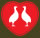

SALADA
- Salada Mista
(alface, tomate, palmito, ovo, cebola, brócolis, cenoura, queijo, presunto e ervilha)
- Salada Simples
(alface, tomate, palmito e cebola)
- Salada de Palmito
- Salada Maricota
(alface, rúcula, muzzarela de búfala, gorgonzola, kani kama e fatias de manga ao molho de iogurte)
- Salada Mariquinha
(folhas verdes, cubos de queijo de minas, peito de peru defumado, palmito, morango, amêndoas salpicadas ao molho de mostarda)
- Salada Tropical
(folhas verdes, ricota, peito de peru defumado, damascos secos ao molho de maracujá com nozes)
- Salada Primavera
(cenoura ralada, beterraba, rúcula, alface americana, kani kama, repolho, muzzarela de búfala e ervilhas)

PEIXE
-
Filé de peixe à Bellavilla
(arroz branco, fritas , legumes, molho mostarda, limão e salsa)
-
Filé de peixe à doré ao molho de camarão
(arroz branco, batata soutê e legumes)
-
Filé de salmão à moda
(arroz de brócolis, batata soutê e palmito na manteiga.)
-
Filé de peixe à milanesa
(arroz branco, legumes e fritas)
-
Bacalhau à portuguesa
(batata, ovos, cebola, brócolis, tomate, cenoura, vagem e azeitonas)
-
Filé de badejo à Bella Mounier
(arroz, legumes, batata soutê, molho de alcaparras, champignon e camarão)
-
Filé de peixe grelhado simples
(pescada)
-
Filé de peixe grelhado simples
(badejo/salmão)
-
Filé de peixe à Bella Mounier
(arroz, legumes, batata souté, molho de alcaparras, champignon e camarão)
-
Filé de salmão à Bellavilla
(arroz à grega, legumes e batata soutê)
-
Filé de Linguado á moda
(risoto de camarão, legumes e batata soutê)
FRANGO
-
Filé de frango grelhado
(arroz branco, batata soutê, salada de palmito e creme de milho)
- Filé de frango grelhado simples
-
Filé de frango à parmegiana
(arroz branco, fritas e legumes)
-
Filé de frango grelhado à Bellavilla
(arroz branco, legumes, fritas e creme de espinafre)
-
Frango à Passarinho com
(fritas, legumes e arroz branco)
-
Filé de Frango à Diplomata
(filé à milanesa, presunto, mussarela gratinada, arroz, legumes e fritas)
-
Filé de frango à Cubana
(filé, abacaxi, banana, maçã à milanesa, presunto, arroz, fritas e legumes)
-
Strogonoff de frango
(arroz branco e batata palha)
-
Filé de frango com legumes
(brócolis, couve-flor, cenoura e vagem)
-
Filé de frango com salada
(alface, tomate, cebola, azeitona e palmito) ou fritas
CARNE
- Filé mignon grelhado simples
-
Filé mignon com legumes
(brócolis, couve-flor, cenoura e vagem)
-
Filé mignon com salada
(alface, tomate, cebola, azeitona e palmito)
- Filé mignon com fritas
-
Filé mignon grelhado
(legumes, arroz branco e purê de batata)
-
Filé mignon ao molho argentino
(arroz branco, batata frita, palmito na manteiga)
-
Filé mignon à Bellavilla com
(arroz à grega, fritas farofa e legumes)
-
Filé mignon à Daniel
(arroz à grega, fritas, legumes, molho madeira e alho)
-
Filé mignon à Parmegiana
(arroz, fritas e legumes)
-
Filé mignon à Cubana
(filé, abacaxi, banana, maçã à milanesa, presunto, arroz, fritas e legumes)
-
Filé mignon à moda, recheado
(tomate seco, mussarela de búfala gratinada, arroz, fritas)
-
Picanha grelhada
(fritas, legumes e arroz branco)
-
Picanha à Daniel
(arroz à grega, fritas, legumes, molho madeira e alho)
-
Picanha à Bellavilla
(arroz branco, batata frita, legumes e farofa)
-
Picanha grelhada
(arroz branco, farofa, fritas e vinagrete)
-
Strogonoff de filé mignon
(arroz branco e batata palha)
-
Espeto de filé mignon
(arroz, farofa, batata frita, salada e molho vinagrete)
-
Espeto misto
(filé mignon, lombo, lingüiça, frango, arroz, farofa, batata frita, salada e molho vinagrete)
-
Filé mignon à cavalo
(dois ovos fritas ou arroz)
-
Filé mignon à francesa
(arroz, legumes, presunto, ervilha, cebola e batata na manteiga)
-
Filé mignon ao molho madeira
(arroz, legumes e fritas)
-
Feijoada
(somente aos sábados)
-
Feijoada para Viagem
(somente aos sábados)
- Espaguete ao sugo
- Espaguete à bolonhesa
-
Penne à Moda
(berinjela, castanha de caju, azeitona preta, gorgonzola ao molho vermelho)
- Penne ao molho branco
-
Penne à la Mariella
(tomate em pedaços, alho, cebola, azeite, azeitonas pretas, alcaparras)
-
Penne à Bellavilla
(presunto, queijo prato e manjericão ao molho branco)
- Penne ao molho de camarão
- Penne ao molho de quatro queijos
- Lasanha à bolonhesa
- Lasanha ao molho branco
- Nhoque à Bolonhesa
-
Batata Recheada
(batata assada recheada de manteiga temperada/requeijão/catupiry com frango desfiado/cheddar)
-
Ervilha
(molho branco, caldo de galinha, ervilha e tempero)
-
Palmito
(molho branco, caldo de galinha, palmito e tempero)
-
Milho
(molho branco, caldo de galinha, milho e tempero)
-
Cebola
(caldo de galinha, cebola, manteiga, farinha, pão e queijo ralado)
-
Aspargos
(molho branco, aspargos e tempero)
- Canja
- Petit gateau
- Creme de papaya
- Salada de frutas
- Salada de frutas com 1 bola de sorvete
- Salada de frutas com iogurte e granola
- Porção de mamão papaya
- Porção de melão
- Porção de abacaxi
- Banana split
- Sundae
- Colegial
- Taça de sorvete simples 2 bolas
- Açaí na tigela

MASSAS
CREMES
SOBREMESAS
Todos os direitos reservados © 2025 - 2026
Parcerias de sucesso:
Delivery: 13 3222 4466 ou 3221 3737, consulte nossa área de cobertura.